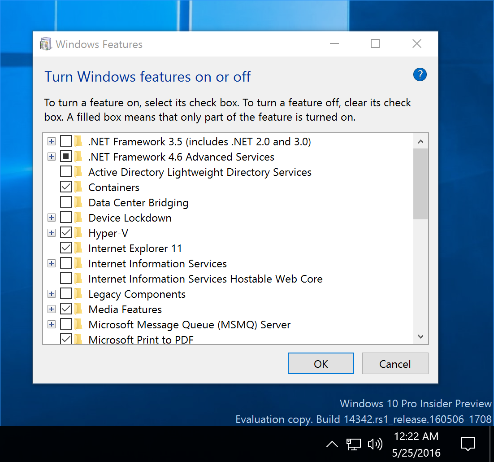
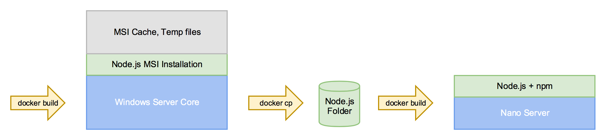

Beginning with Windows 10 Insider 14342 you can enable the new Containers feature in Windows. This allows you to run Windows Containers directly in Windows 10 as Hyper-V containers. At the moment only NanoServer containers are supported. So it's time to get used to NanoServer and how to create some base images.

In this blog post I'll show how to build small base images to deploy Node.js applications as NanoServer Docker images that you can run in Windows 10 or in Windows Server 2016 TP5.
What is Nano Server?
Each Docker image must use of of the two OS images: windowsservercore or nanoserver.
A Windows Server Core image is highly compatible with previous Windows Server Core installations. You don't have a GUI, but you can install almost everything into it. But this compatibility comes with a prize, the size of the OS image is about 9.3 GByte as it contains about a whole server.
A Nano Server image is highly optimized and almost everything was taken out of it to be able to deploy more of these containers in cloud servers. The size is about 817 MByte. This makes installing Docker on Windows 10 much faster than with the windowsservercore OS image.
So if you get asked which to choose you probably would answer to take the smaller one.
The challenge: MSI packages
But as soon as you try to write a Dockerfile to install some software into a Docker image you will notice that the minimized OS comes with a new challenge. You can't install MSI packages in Nano Server.
If you look at nodejs.org there are only MSI packages for Windows if you also want to have npm installed.
So how could we build a Node.js Docker image based on Nano Server? I've tried different ways, eg. also installing tools like lessmsi while building the Nano Server image only to find out that lessmsi is only a 32 bit application. Another restriction in Nano Server: You only can run 64 bit processes in Nano Server.
Another approach would be installing Node.js on your host machine and copying the files into the Docker image. But I don't want to install more tools than needed on a Docker host.
Therefore I show you a way to use only Docker commands and a Windows Server 2016 TP5 machine to build both Windows Server Core image as well as a Nano Server image with Node.js + npm installed.
Step 1 - Install MSI into Windows Server Core image
A much easier way is to start with a Windows Server Core image. You can download and install the Node.js MSI package with this Dockerfile. This is very similar to the Linux version and downloads, verifies the download, installs the package and then removes the download again.
Now open an editor with
notepad Dockerfile.
and enter this Dockerfile:
FROM windowsservercore
ENV NPM_CONFIG_LOGLEVEL info
ENV NODE_VERSION 4.4.5
ENV NODE_SHA256 7b2409605c871a40d60c187bd24f6f6ddf10590df060b7d905ef46b3b3aa7f81
RUN powershell -Command \
wget -Uri https://nodejs.org/dist/v%NODE_VERSION%/node-v%NODE_VERSION%-x64.msi -OutFile node.msi -UseBasicParsing ; \
if ((Get-FileHash node.msi -Algorithm sha256).Hash -ne $env:NODE_SHA256) {exit 1} ; \
Start-Process -FilePath msiexec -ArgumentList /q, /i, node.msi -Wait ; \
Remove-Item -Path node.msi
CMD [ "node.exe" ]
You can build the Node.js Docker image with this command
docker build -t node:4.4.5 .
After that you have Node.js + npm installed in this Docker image.
Step 2 - Distill Node.js folder
Now we want to distill the Node.js folder from the Docker image. To do that we have to run a Docker container and then we can copy the folder to a temporary folder on the host machine.
docker run --name=node-temp node:4.4.5 node --version
docker cp "node-temp:c:\Program Files\nodejs" nodejs
docker rm -vf node-temp
Step 3 - COPY deploy to Nano Server image
With this extracted folder we build the Nano Server image. The following Dockerfile copies the contents of that temporary folder into the Windows directory which is already in PATH. You may want to put the files in another directory, but then you also have to add it to the PATH environment.
Create a sub folder for the Nano Dockerfile
mkdir nano
notepad nano\Dockerfile.
and create this Dockerfile:
FROM nanoserver
COPY nodejs /windows/system32
CMD [ "node.exe" ]
Run this command to build the Nano Server image
docker build -t node:4.4.5-nano nano
Now we have two Docker images, one for Windows Server Core and one for Nano Server.
Here is a small diagram of the three steps we just did:

I've uploaded both Docker images to the Docker Hub and found out that the Windows Server Core image is about 55 MByte and the Nano Server image is only 9 MByte.
Extracting all the layers of the first Docker image I found out that installing an MSI package also saves a copy of the package in the MSI cache. And running commands also leaves some changes in local databases and the registry which is also stored as difference in the layer.
So one advice to build small Windows Docker images is to avoid installing MSI packages and prefer ZIP files or even using a COPY deployment into an image. Of course MSI packages are often more convenient to install but result in bigger image sizes.
Build app with ONBUILD
Another easy way to dockerize your Node.js application is the ONBUILD feature in the Dockerfile. At least for simple examples it is very convenient to use a prepared Docker images with that feature.
So let's build another Dockerfile just like the official node:onbuild image which does these steps to install your application and all the dependencies:
- copy package.json
- run npm install
- copy rest of sources
So we create another folder for that Dockerfile
mkdir nano\onbuild
notepad nano\onbuild\Dockerfile.
and the following content:
FROM node:4.4.5-nano
RUN mkdir \app
WORKDIR /app
ONBUILD COPY package.json package.json
ONBUILD RUN npm install
ONBUILD COPY . .
CMD [ "npm.cmd", "start" ]
Now build the Nano Server image with the ONBUILD feature:
docker build --isolation=hyperv -t node:4.4.5-nano-onbuild nano/onbuild
I have tested this with a small Node.js web server that uses Express and some other dependencies.
To build a dockerized Node.js application running in a Nano Server container you only have to go to your Node.js source code and add a single line Dockerfile
FROM nano:4.4.5-nano-onbuild
and build your application Docker image with
docker build --isolation=hyperv -t mynodeapp:nano .
Optimizations
Investigating the layers of such an application showed some other temporary folders which aren't needed inside the Docker image.
- A npm-cache folder
- Many files in temp folder, also from npm
So we can optimize that ONBUILD Dockerfile a little bit to remove these temp folders while building your application Docker image. There is a command npm cache clean, but this didn't work for me, so I have changed that to some rd commands. This is the final ONBUILD Dockerfile:
FROM node:4.4.5-nano
RUN mkdir \app
WORKDIR /app
ONBUILD COPY package.json package.json
ONBUILD RUN npm install & rd /s /q %APPDATA%\npm-cache & for /d %G in ("%TEMP%\npm-*") do rd /s /q "%~G"
ONBUILD COPY . .
CMD [ "npm.cmd", "start" ]
With that optimized Docker image deploying a simple Express web server the final application Docker image went down from 24 MByte to 15 MByte. In comparison with the unoptimized Windows Server Core image the same application is 82 MByte on the Docker Hub.
Conclusion
If you don't want to build these Node.js Docker images manually you can find them on the Docker Hub with links to the Dockerfiles in the GitHub repo.
With such a Node.js Nano Server base image on the Docker Hub you can start developing on your Windows 10 machine. Now dockerize your Node.js apps into Nano Server containers and share them with others via the Docker Hub.
The Windows Server 2016 is only needed to install MSI packages and distill the software into Nano Server images.
If you find this blog post useful, just share it with your friends and colleages. Please leave a comment if you have questions or improvements. You can follow me on Twitter @stefscherer.